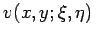
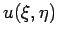
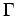
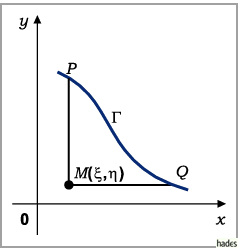
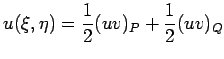
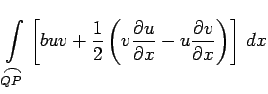
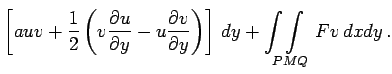
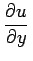

Riemannsche Methode zur Lösung des Cauchyschen Problems der hyperbolischen Differentialgleichung
- 1. Riemannsche Funktion
- heißt die Funktion , wobei
 und
und  als Parameter aufgefaßt werden, die der zu (9.95a) konjugierten homogenen Differentialgleichung
als Parameter aufgefaßt werden, die der zu (9.95a) konjugierten homogenen Differentialgleichung
und den Bedingungen
genügt. Allgemein haben lineare Differentialgleichungen 2. Ordnung und die zu ihnen konjugierten Differentialgleichungen die folgende Form:
und
- 2. Riemannsche Formel
- wird die Integralformel genannt, mit deren Hilfe die Funktion  bestimmt wird, die der gegebenen Differentialgleichung (9.95a) genügt und die auf einer vorgegebenen Kurve  (s. Abbildung)

zusammen mit ihrer Ableitung nach der Richtung der Kurvennormalen vorgegebene Werte annimmt:
|  |
- |
 |
|
| |
- |
 |
(9.95f) |
Die glatte Kurve darf keine zu den Koordinatenachsen parallelen Tangenten besitzen, d.h., sie darf die Charakteristiken nicht berühren. Das Kurvenintegral in dieser Formel kann berechnet werden, da aus den Werten der Funktion und ihrer Ableitung nach einer nichttangentialen Richtung längs des Kurvenbogens die Werte beider partieller Ableitungen ermittelbar sind.
Oft werden beim CAUCHYschen Problem anstelle der Normalenableitung auf der Kurve die Werte einer partiellen Ableitung der gesuchten Funktion vorgegeben, z.B. . Dann wird eine andere Form der RIEMANNschen Formel verwendet: